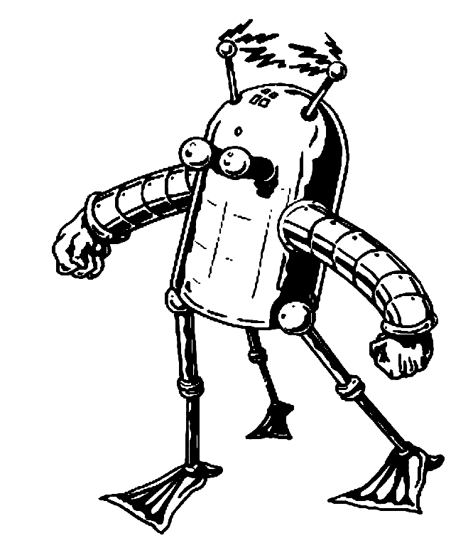
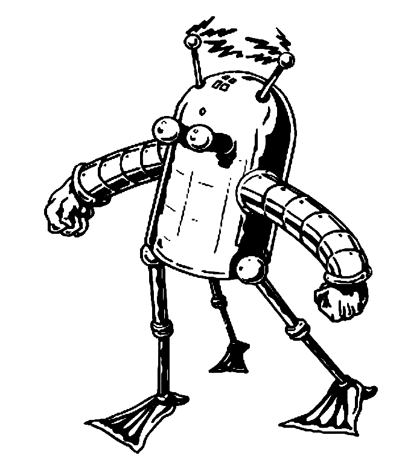
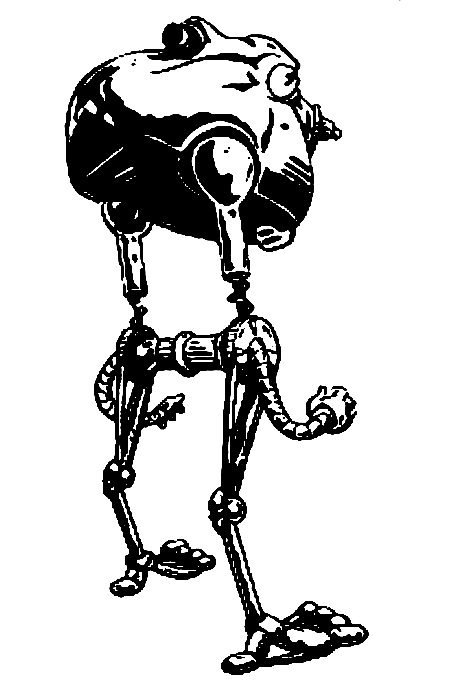
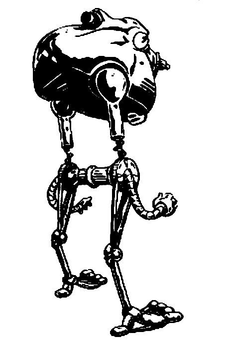

3.3 Module Description and Data Flow
Hex: A data structure made up of Hexes (from Honeycomb). Each hex contains various properties, such as current bots on a hex, if it's destroyed, coordinates, etc.
Initiative Phase
- Machine Roles 4 Random Numbers
- Each Number is assigned to each player
- The player with the largest number goes first
- Create Power Node
- Machine Prompts Player to create a Power Disc
- ~Player Confirms whether they would like to create a Power Disc If yes,
- Machine Chooses a random Hex and Grid
- Machine Updates the Power Disc counter
- Machine Updates the tile's graphic
- Machine Calls the Player Turn Screen
- *** Some of the Player Actions are identical to the Action Card, so I won't include them here.
- Remove a skill point - Since these are player actions, these are done with skill points
- Function Calls Remove a skill
- Machine Calls the current players number
- Machine decrements that player's Action points by 1
- Draw a Card
- Function calls the "Draw a Card" Action
Card Remove - //Called after each card is played.
- Machine Calls the used card's hand ID number (Or however we identify cards in hand)
- Machine Removes that card from the hand (however that works visually)
- Function calls a "Destroy Hex" Action
- Grid Selection Screen appears
- Grid Confirmation Button Appears
- ~User chooses a Grid
- ~User confirms Grid
- Machine chooses a random Hex
- Chosen Hex changes its destroyed boolean to true
- Hex deletes all entities on itself
- Hex changes its appearance to destroyed
- Grid Selection Screen disappears
- Function plays a "Warp Grid" Action
- Grid Selection Screen appears
- Machine chooses a Grid
- ~Player chooses a new location for the Grid
- Grid Confirmation Button appears
- Machine checks if the new location is valid
- If available, Grid glows green (or some other indicator of good)
- Confirmation Button becomes clickable
- If unavailable, Grid glows red (or some other indicator of wrong)
- Confirmation Button appears greyed out and unclickable
- Two directional buttons appear
- ~Player Rotates the Grid
- ~Player confirms the Grid selection
- Each Hex of the Grid is copied to the corresponding Hex in the new Grid
- The old Grid is erased and set to empty
- The Grid Selection Screen disappears
- Function Calls a "Double Warp" Card
- Grid Selection Screen Appears
- ~Player Chooses a Grid
- ~Player Confirms Selection
- Machine Selects Another Grid
- *** Im not entirely sure what the best way to handle this data, as you need to turn the grid somehow,
- If the data is moved fast enough, we could simply update each hex as they turn it
- If the data movement is too slow, a secondary option will need to be explored
- Machine Saves the Second Grid
- Machine Copies the First Grid to the Second Grid
- Machine Copies the Saved Second Grid to the First Grid
- Machine Displays Two Directional Arrows Around the First Grid
- ~Player Orients Grid~Player Confirms Their Orientation
- ~Player Orients Grid~Player Confirms Their Orientation
- Machine Removes the Directional Arrows Around the First Grid
- Machine Saves Orientation of First Grid
- Machine Displays Two Directional Arrows Around the Second Grid
- ~Player Orients Grid
- ~Player Confirms Their Orientation
- Machine Removes the Directional Arrows Around the Second Grid
- Grid Selection Screen Disappears
- Machine Calls the "Create Power Disc" Function
- Machine Identifies the player who played the card
- Machine Identifies the location of that players C-Bot
- This could either be done by keeping the location of each C-bot in a global variable
- If the C-bot has 4, (We need to figure out which of these to do)
- Choose the Next Robot on the stack, and repeat until an empty robot is found
- If no robot is found, the Disc is placed on a random other hex neighbooring the middle hex.
- Else, It places on on the C-Bot
- Machine Calls the "Draw a Card" Function
- Machine calls the current players number
- Machine creates a random number
- Machine adds a corresponding card to that players hand
Display Hand Function
- ~Player clicks a button on the UI to view their deck
- Machine Displays the Deck Window
- -> Machine Calls a list from
- A variable or
- A list File
- A list of all the cards in the players hand
- -> Render the cards individually, in a cascade X wide x Y tall collumn of cards
- -> Cards all have graphics displaying what action it is
- Clicking on a card displays the information about said card
- ~Player clicks the UI Icon again to return to the previous screen
- Machine Removes the Deck Window
Flow Charts
The following are flow charts that describe actions
Destroy Hex

Double Warp
Warp Grid
Mock-ups
Here are some mock-ups that give an idea of certain UI elements in the game.
Start Menu
Sets up the game, asks how many players.

Board with Girds
Shows a game board set up with no game pieces. The grid numbers are displayed. Also details our player hotseat, where a user will be able to select from various actions.

Card Display
When the user selects a view cards button or play cards button they will be given a view with their deck. It'll be scrollable from left to right due to hand's size not being limited.

Board with Units
Shows a game board with unit. The game allows user to stack multiple units of the same faction on a hex. We'll use a pop up view to show unit details.

Actual Screen
This shows are coded version of the board, we can place hex grids on the board and highlight a gird.

Artwork
We are going to use some of the original artwork from the game with our units and logos. We screen captured images of the bots. used photoshop and illustrator to make them into vector images. Artwork from: here.
 

 
